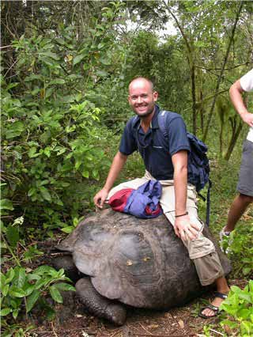

Med solbriller på nattevakt
Det vert sagt at seilasen frå Panama til Galapagos er den mest keisame på ei jordomsegling. I og med at ruta går rett gjennom Stillebeltet, må vi rekne med lite vind, men desto meir regn og torevêr. Det siste stemte. Men kven kan seie at squalls (mørke skyer med mykje regn og vind) og lyn og torevêr er keisamt?
Vinden kjem riktig nok på snuten, men den er god og trekker Petrellen i riktig retning. Det går ikkje mange timane før vi kjenner att ein gamal kjenning; Stillebeltet. Vi har helst på kvarandre to gongar tidlegare, og vi kjenner katta på gangen. Mørke skyer, vind frå alle retningar og eit evig fyrverkeri når natta sig på. Utan pause, sprekker store lyn over den svarte nattehimmelen. Det er ikkje standard prosedyre med solbriller på nattevakt, men i Stillebeltet, der øst er vest og fem og to er ni, der går alle ting an... Frustrerande og absurd, ja, men aldri keisamt.
Vi kan for øvrig legge til at vi hadde vasslekkasjar og mugg på veggane, men dette er motvindens kjære følgesvenn og gamalt nytt. Vi er takksame for lensepumper og solskinn.
Kva skjedde med temperaturen? To dagar frå land, synker temperaturen over 10°c. I gufne 25 varmegrader må vi fram med ullundertøy og seglklede. Det er underleg kva vaner desse kroppane våre har vendt seg til…
I eventyrland
Å kome til Galapagos er stort. Tidleg på morgonen ser vi fjelltoppane stige opp av horisonten. Like etter høyrer vi eit plask ved sida av båten. Ei lita skilpadde stikk eit morgontrøytt andlet opp av vatnet. "Velkomen til Galapagos", seier han sakte og duppar i bølgene "Takk for det", seier vi og ser nok litt forfjamsa ut. Skilpadda smiler lurt og snart ser vi han ikkje att.
Galalapgos er dyra sitt rike. Sidan dei (stort sett) har fått leve i fred på øyene, ser dei ikkje på menneska som fiendar. Dermed kan vi omgås fuglar og dyr på ein heilt anna måte her enn ellers i verda. Rundt båten stupar pelikanar og blue footed boobies (sjøfugl med knall blå føter) etter fisk. Sjøløvene dansar rundt båten, og der kjem ein pingvin symjande forbi.
Vi besøker to av øyene på Galapagos, Santa Cruz og Isabela. På førehand hadde vi sett føre oss Galapagos som ei stor grøn øy med nokre få hus oppe i fjella. I tillegg var vi førebudd på å måtte be på våre kne for å ankre opp her. Så feil kan man ta. Santa Cruz er ein liten by med alt ein måtte ynskje og vi kan ligge ein månad om vi vil.
Svenske Equity er allereie på plass då vi kjem fram til Galapagos. Dei har allereie funne (kven fann kven?) George, ein grei kar som vil ta oss med på opplevelsestur. Tidleg på morgonen stod pick-upen klar. Vi sette oss på lasteplanet og køyrde opp i høgda. Vi ruslar gjennom skogen og ned i ei lang lavagrotte. Ved inngangen sit ei ugle og kikka søvnig på oss. Den helsar oss velkomen, og gjer ikkje teikn til å ville flytte seg. Vi nikkar og ruslar vidare.
Hyrdestund i skogen
Skogen som møter oss bugnar av frukt og grøne plantar. Over alt er det ulike dyr og fuglar. Det var berre å late beina føre oss gjennom og nyte synet. Brått forsvinn George ut av stien. Etter nokre sekund, er han tilbake og vinkar oss etter seg. Mellom buskene ligg det ein stor brun stein. George forklarar at den har ete seg veg gjennom graset. Det er då vi skjønar det. Det er ingen stein, men ei urgamal skilpadde. "Og alderen?" spør vi, men det vil ikkje skilpadda ut med. George meinar skilpadda er ein stad mellom 100 og 200 år. Kanskje ein kjenning av Darwin? Vi ser om lag ti skilpadder på turen. Store gamle menn og litt mindre gamle damer.
Brått høyrer vi ein merkeleg lyd. Etter ti sekunder kjem lyden att. "Dei parar seg", seier George. Han er heilt vill i augene og andletet strålar. Snart ser vi skilpaddene under nokre buskar. "Dette er heilt unikt", seier George og går nærare. Etter dette møtet, og etter skilpaddene sitt tempo å døme, er der fullt forståeleg at skilpaddene kan trenge 100 til 200 år for å utføre sin misjon på jorda…
Snart er vi tilbake i byen, maset og varmen att. Hovudet er fullt av inntrykk og ryggsekkane fulle av sjølvplukka grape, appelsin, sitron, pasjonsfrukt og tomat.
Dykker med hai
Havet rundt Galapagos har mykje å vise oss. Vi henger oss på ein dykketur til den vesle øya Floreana. Tidleg på morgonen er vi i gang. Vi trer i våtdraktene (det er avskrekkande 22°c i vatnet) og hoppar i sjøen. Snart er vi omringa av sjøløver. Det er minst 20 av dei, og dei symjer ikring oss. Eg freistar å dykke ned, men med 14 mm. våtdrakt er oppdrifta for stor. Sjøløvene ertar, symjer mot oss men svinger unna i siste liten.
Vi kryp opp att i båten. Vi får på oss flasker og er klare for det som måtte skjule seg der nede i djupet. Snart er vi omringa av store fiskestimar og under oss symjer ein sting-ray forbi. Vi kikkar opp, og med skrekkblanda fryd kikkar vi på ein hai som symjer der oppe. Nokon trekker i symjefoten min og peikar. Over oss sklir det ei skilpadde forbi. Aldri har vel 40 minuttar gått så fort.
Nattnavigering
Vi tar turen til øya Isabela før vi gjer oss klare for avgang. Turen dit tar om lag 10 timar -om ein ikkje får motortrøbbel… Det får vi. I to knops fart bevegar vi oss mot målet, og må konstatere at mørket ville rekke Isabela før oss. Suedama som har betre kart enn oss viser veg og leier oss trygt i hamn.
Vi kastar ankeret og kryssar fingrane for at plasseringa er ok. Vi ser ingenting rundt oss og må bruke lyskastar for å sjå kvar eventuelle andre båtar befinner seg. Snart høyrer vi ein kjend lyd. "Petrell, Petrell, Suedama calling". Vi blir invitert over på nyfiska dorado. Ajaj, er ikkje slike mennesker gull verdt?
På Isabela reiser vi på ridetur opp til ein vulkan som hadde sitt siste utbrot i 1979. Vi humpar avgarde på trøytte hestar, men turen blir flott. Vi rir langs eggen på ein gamal vulkan som no er attgrodd. Vi humpar vidare til neste vulkan. Landskapet er heilt svart og taggete. Vi må trø varsamt. Her vil vi ikkje falle. Slik må det vel sjå ut på månen? Eg kjem til å tenke på Armstrongs kjente ord då han dumpa ned på månen. Eg konstaterar at dette er eit stort skritt for meg, men eit ubetydeleg skritt for menneskeheten…
Og vidare?
Vi ser på kalendaren at tida vår på Galapagos renn ut. Det er på tide å ta til på den lengste etappen på ei jordomsegling; 3000 sjømil til Fransk Polynesia. Spørsmålet er kvar vi skal sigle. I sør freistar Påskeøya og Pitcairn med sine til tider umogelege ankringstilhøve. Kva om vi har vore på havet i ein månad og ikkje ein gong kan gå i land når vi kjem fram? Vil vi takle det? I nord freistar frodige Marquesas med sitt forhistoriske landskap… Det blir mange og lange diskusjonar ombord i Petrell, Suedama og Equity.
Turen sørover vil kreve meir tid. Vi er seint ute om vi skal vere på New Zealand (ja, vi trur det blir New Zealand i staden for Australia…) i november. Dette er refrenget, og vi bestemmer oss for å ta den nordlege ruta. Skuta blir fylt til randen av vatn, diesel og frukt (holder det med 150 bananer?). Frode tippar det vil ta oss 23 dagar til landkjenning… Eg tippar 40 for ikkje å bli skuffa… Hula-hula og blomsterkransar ventar i andre enden. Vi er i gang!
hilsen Frode og Marit
Reisebrev 16: Galapagos, 26.04. - 23.05.04
30.05.2004

To dagar frå land, synker temperaturen over 10°c. I gufne 25 varmegrader må vi fram med ullundertøy og seglklede.{kind=link}
{kind=link}
{kind=link}
{kind=link}
{kind=link}
{kind=link}
{kind=link}
{kind=link}